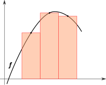

Pour accéder aux modules de calcul, l'utilisateur doit sélectionner le Calcul Proba, où il peut saisir les paramètres nécessaires au calcul : Espérance, Forme, Valeur t et Nombre de valeurs. Toutefois, ces paramètres sont soumis à des contraintes précises pour garantir la validité des calculs.
Paramètres de calcul
-
Espérance (µ) : Doit être strictement positive, avec une valeur minimale de zéro, car l'espérance représente une moyenne qui est toujours positive.
-
Forme (λ) : Doit être strictement supérieure à zéro et inférieure ou égale à 100, pour influencer la précision des calculs et la dispersion des données.
-
Valeur t : Représente la borne supérieure de l'intégrale et doit être supérieure à 0.
-
Nombre de valeurs : Doit être compris entre 100 et 10 000 pour garantir une précision suffisante sans surcharge.
Ces limitations garantissent la cohérence et la fiabilité des calculs tout en évitant les erreurs dues à des saisies non valides.
De plus, l'utilisateur peut choisir la méthode désirée parmi les méthodes numériques disponibles :
La méthode des rectangles gauche
Cette méthode consiste à approcher l'aire sous la courbe de la fonction de densité de probabilité en utilisant des rectangles dont la hauteur est déterminée par la valeur de la fonction au bord gauche de chaque intervalle.
La méthode des rectangles "médians"

Dans cette méthode, l'aire sous la courbe est approximée en utilisant des rectangles dont la hauteur est déterminée par la valeur de la fonction au point médian de chaque intervalle, pouvant offrir une meilleure approximation dans certains cas.
La méthode des trapèzes
Cette méthode utilise des trapèzes au lieu de rectangles pour approcher l'aire sous la courbe, formant des trapèzes en reliant les points de la fonction aux extrémités de chaque intervalle pour une approximation plus précise.
Ensuite, l'utilisateur appuie sur Calculer pour afficher la courbe, la loi inverse-gaussienne et la valeur de probabilité.
L'utilisateur peut faire flotter sa souris sur la courbe pour afficher les valeurs précises de f(x) et x. Il dispose d'une valeur de probabilité comprise entre 0 et 1 ainsi que des paramètres entrés (espérance, forme et valeur t) et de l'écart-type.
En appuyant sur Retour, il retourne au formulaire de départ. De plus, l'utilisateur connecté peut enregistrer le résultat, la forme et l'espérance avec la date d'enregistrement.
En appuyant sur Sauvegarder, il a accès à son historique de calcul. S'il appuie sur consulter, il peut voir ses calculs enregistrés.